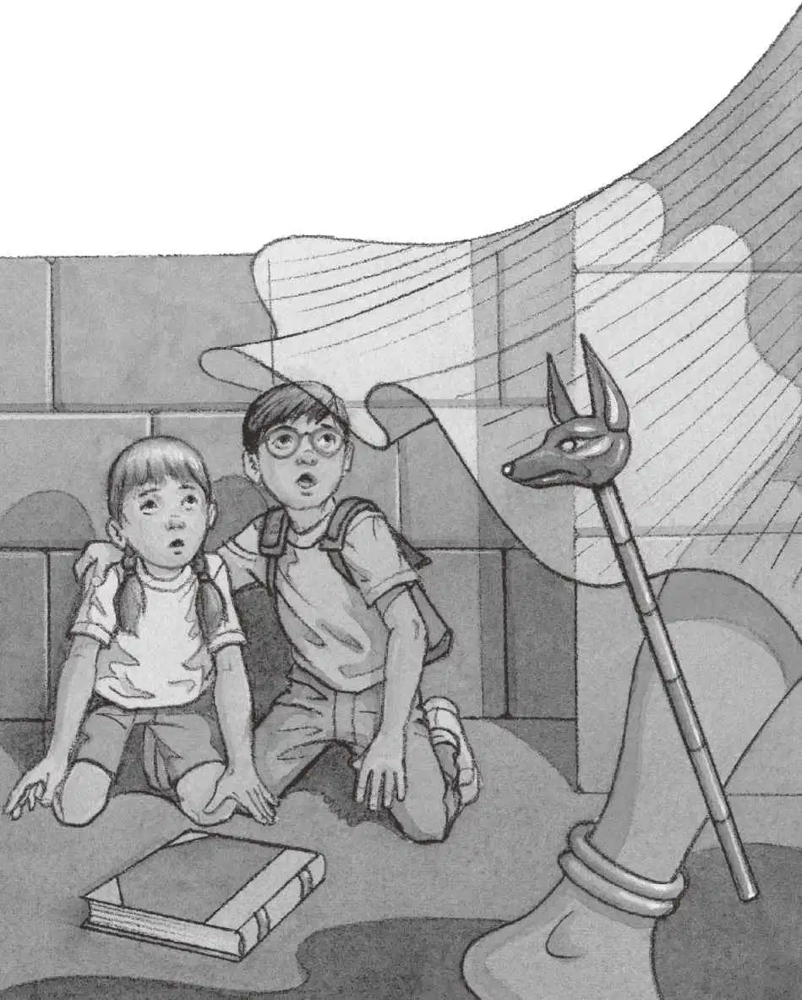

“它跑到哪儿去了？”杰克问。
他和安妮站在洞口往金字塔里张望。
面前有一条长长的通道。
燃烧的火把照亮了通道的墙壁，投下阴森森的黑影。
“我们进去吧。”安妮提议道。
“等一等。”
杰克掏出那本埃及书，翻到关于金字塔的部分。
他读道：
金字塔有时被称为死者之家。
它基本上是由实心的石头盖成的。
在塔的深处有墓室。
“哇！我们进去吧，去那些墓室看看。”安妮说，“我猜那儿肯定有木乃伊。”
杰克深深吸了口气。
然后，他离开明亮、灼热的阳光，踏入了黑暗、阴凉的金字塔。
通道里一片沉寂。
地板、天花板、墙壁——所有的一切都是用石头造的，地面倾斜而上。
“我们必须再往里走走。”安妮说。
“没错，”杰克说，“但你要紧紧跟在我后面，不要说话，不要——”
“走吧！走吧！”安妮轻轻推了杰克一把。
杰克顺着倾斜的地面往上走。
“那只猫在哪儿呢？”他边走边想。
通道一直没有尽头。
“等一等，”杰克说，“我想看看书。”
他把埃及书举到火把下面，就着光线翻开，书上有一幅金字塔的内部结构图。
“你看，墓室在金字塔的正中间。”杰克指着那幅结构图说，“应该就在前面。”
杰克把书往胳膊底下一夹，继续和安妮往金字塔的深处走去。
不一会儿，地面变平了，空气也变得不一样了——到处都散发着一股霉臭味儿。

杰克又翻开书，对照着说：“我们应该快到墓室了，你看这幅图！通道向上斜，然后变平，接着墓室就到了。看明白了吗？”
“咿咿！”突然，一阵奇怪的尖叫声响彻整个金字塔。
杰克吓得手一抖，埃及书掉在了地上。
这时，从阴影里蹿出一个白色的身影，嗖嗖地朝他们逼近。
“是木乃伊吧！”杰克想。
“是活的！”安妮大叫一声。